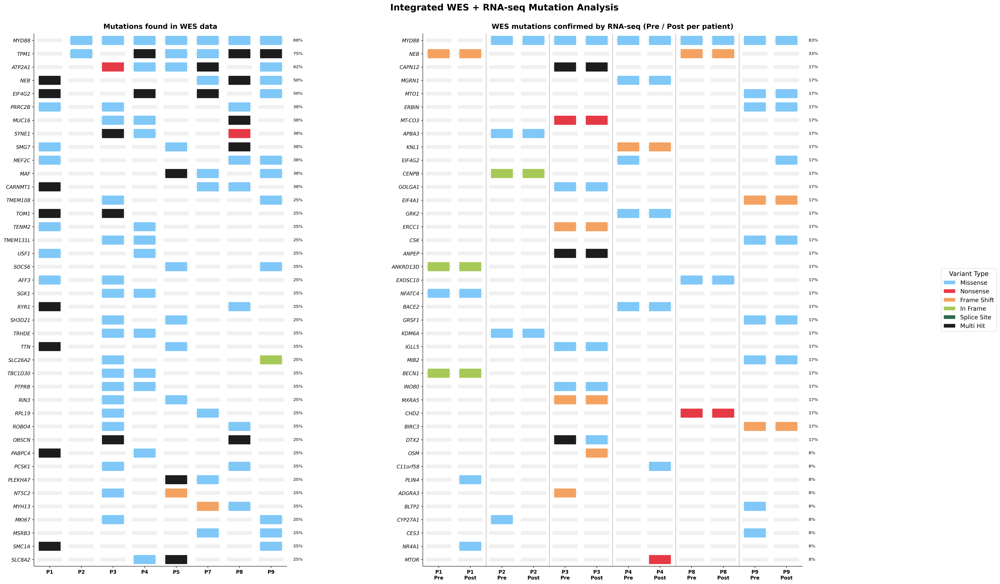

Overview
This project presents a complete bioinformatics pipeline integrating Whole Exome Sequencing (WES) with pre- and post-treatment bulk RNA-seq data from 8 lymphoplasmacytic lymphoma (LPL) / Waldenström macroglobulinemia (WM) patients who received a personalized DNA vaccine. The pipeline was built and executed entirely through AI-assisted workflows using Claude Code and Modal cloud computing.
The analysis progresses from raw sequencing data through somatic variant calling, RNA-seq alignment, variant expression validation, functional annotation, gene fusion detection, and culminates in publication-quality integrated oncoplots.
Pipeline Overview
WES Variant Calling
RNA-seq Alignment
WES + RNA Integration
Variant Annotation
Oncoplot Generation
Step 1: WES Somatic Variant Calling (8 patients)
Tumor-normal paired variant calling with GATK Mutect2. Germline resource: gnomAD. Panel of Normals: 1000g. Only PASS variants retained.
Output: 124 to 3,227 PASS somatic variants per patient.
Step 2: RNA-seq Alignment & Quantification (18 samples)
6 patients × 3 timepoints (Pre-treatment, Post-treatment, Immune/normal) = 18 RNA-seq BAMs aligned. 27,000–34,000 expressed genes per sample.
Step 3: WES + RNA-seq Integration
12 integration jobs (6 patients × Pre/Post). Expression rate: 39%–67% of WES variants confirmed in RNA.
| Patient | WES Variants | Pre Expressed | Post Expressed |
|---|---|---|---|
| Patient 1 | 691 | 457 (66%) | 461 (67%) |
| Patient 2 | 124 | 48 (39%) | 49 (40%) |
| Patient 3 | 3,227 | 1,544 (48%) | 1,457 (45%) |
| Patient 4 | 650 | 296 (46%) | 300 (46%) |
| Patient 8 | 372 | 179 (48%) | 178 (48%) |
| Patient 9 | 277 | 140 (51%) | 139 (50%) |
Step 4: Variant Functional Annotation
Pure Python annotation using GTF gene coordinates and reference genome codon translation. No external tools (SnpEff) required.
Step 5: Oncoplot Generation
Publication-quality integrated oncoplot showing WES mutations alongside RNA-seq confirmed variants with Pre/Post treatment comparison per patient.
Final Result

Data Flow
WES FASTQ
RNA-seq FASTQ
hg38 + GTF + STAR index
somatic.filtered.vcf.gz
rna.sorted.bam
annotated.maf
VCF + RNA BAM → pysam pileup → variant_expression.tsv
WES panel + RNA-seq confirmed Pre|Post panel
WES+RNAseq_V3.png / .pdf
Modal Volume + Google Drive
Computational Infrastructure
| Step | Tool | Version | Resources | Time |
|---|---|---|---|---|
| WES Alignment | BWA-MEM2 | 2.2.1 | 16 CPU, 64 GB | ~4–6 hrs |
| Variant Calling | GATK Mutect2 | 4.5.0.0 | 8 CPU, 32 GB | ~4–8 hrs |
| RNA Alignment | STAR | 2.7.11b | 16 CPU, 64 GB | ~50–80 min |
| Expression | featureCounts | 2.0.6 | 4 CPU, 16 GB | ~15–20 min |
| Integration | pysam | latest | 4 CPU, 16 GB | ~10–30 min |
| Annotation | Python + GTF | 3.11 | 8 CPU, 32 GB | ~1.5 min |
| Visualization | matplotlib | 3.10 | 4 CPU, 8 GB | <1 min |
All analyses executed on Modal cloud computing platform using containerized environments (Debian slim, Python 3.11). Data stored on Modal persistent volumes. Multiple samples processed concurrently via Modal function spawning.